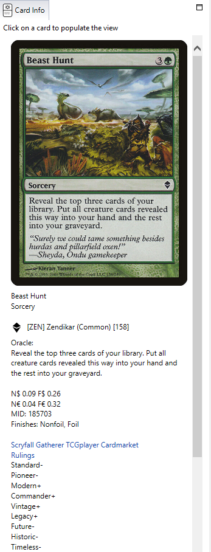
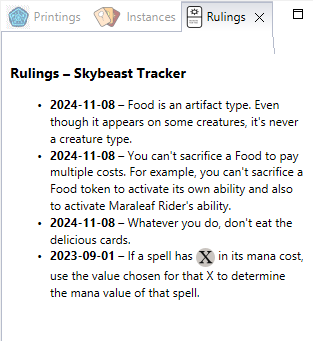
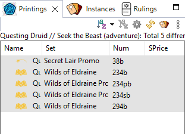
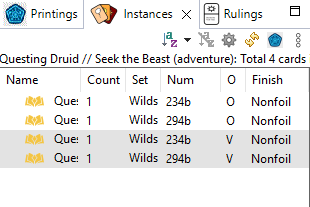

Card details
Click a card in any list: four views show everything about it.
Card Info
The Card Info view (left of the window) shows the selected card:

- The card image. It scales to the size of the view.
- For a double-faced card, a Flip link shows the other face.
- For a copy marked as a proxy, a red Proxy badge on the image (see Proxies).
- The card's text, type, mana cost, set and rarity.
- Its prices (non-foil and foil) at TCGplayer and Cardmarket, with links to the card's page in
each store.
- Its legality in each format.
- Links to the card on Scryfall and Gatherer.
- At the bottom, Updated on: when this information (prices, legality...) was last downloaded,
during a card database update.
The view menu's Show In opens the card in another view (Printings, Instances...).
Rulings
The Rulings view shows the official rulings for the selected card, as published on Scryfall.

Printings
The Printings view lists every printing of the selected card: each set, collector number,
artwork and finish, oldest first. It is handy to pick the exact printing you own.

- Click a column header to sort.
- Right-click a header, or use , to choose the columns.
- Show Instances switches to the Instances view.
Instances
The Instances view shows your copies of the selected card: in which decks and collections
they are, how many, in which condition, finish, and so on.

- It is sorted by location by default, in the same order as the Card Navigator.
- It has the same columns as a deck or collection list. By default it shows Name, Count, Set, Num and
Location first; choose the columns in .
- Show Printings switches to the Printings view.
See also: Prices ·
Formats and legality ·
Views reference